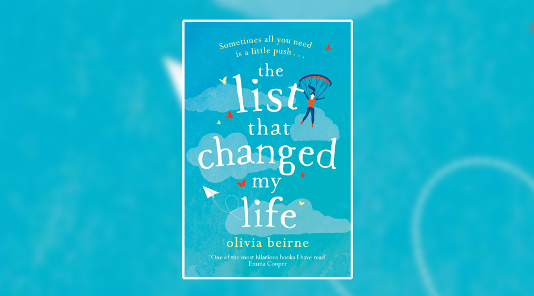
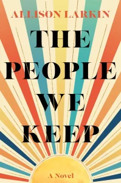

The List That Changed My Life
by Olivia Beirne
Sometimes, all you want from a novel is for it to be a heart-warming, feel-good affair, and that's exactly what you get in Olivia Beirne's debut The List that Changed My Life. Centred on an extremely relatable lead character, this book deftly balances light-hearted humour with more serious topics, resulting in a life-affirming story that hits a lot of good notes and is sure to strike a chord with any reader.
THE PEOPLE WE KEEP
by Allison Larkin
The People We Keep is a heartbreakingly beautiful story that perfectly balances sorrow and joy. With a diverse cast of larger-than-life characters and a protagonist that I not only rooted for but wished I could pluck from the pages and adopt, this book filled my heart to the bursting point and gave me an even greater appreciation for all of the wonderful people in my own life.